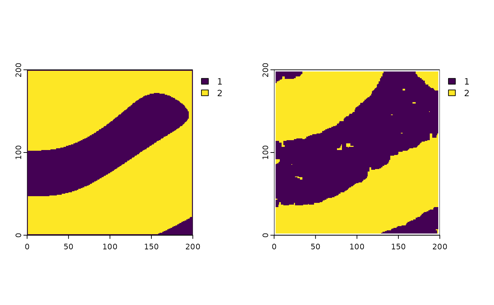

trans_1lr.RdA one layer transformation that allows the expansion of the potential space to areas with submoptimal landscapes based on a co-variant probability
trans_1lr(rast, landcover, aggregation, arabel_val = 1)set.seed(123)
original_potential_space<-generate_perlin_noise(200,200,1,4,3,0.001,TRUE,
"land_percentage", percetange = 50)
corresponding_fields<-establish_by_place_conquer(potential_space= original_potential_space,
cell_size=1,
includsion_value = 1,
mean_field_size = 200,
sd_field_size = 100,
distribution = "norm",
mean_shape_index = 3,
sd_shape_index = 0.3,
percent = 90,
assign_farmers = TRUE,
assign_mode = 2,
mean_fields_per_farm = 3,
sd_fields_per_farm = 3)
map<-return_by_arable_land(corresponding_fields, method =2)
set.seed(123)
modified_potential_space<-generate_perlin_noise(200,200,1,4,3,0.001,TRUE,
"land_percentage", percetange = 30)
result<-LGrafEU::trans_1lr(modified_potential_space,map,4, arabel_val = 1)
par(mfrow=c(1,2))
terra::plot(original_potential_space)
terra::plot(result)
